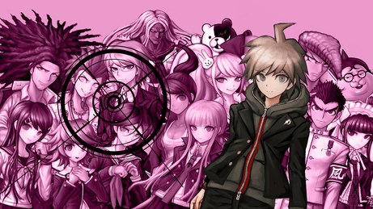

My 5 Favorite Junk Foods
My 5 Favorite Cities
My 5 favorite horror games
- Chilla's Art

- Chilla's art is a japanese horror game creator that releases a new horror game every few months. The premise of each game is a story of someones life that encounters something horrific or supernatural. Extremely fun and I've played almost all the games.
- Puppet Combo

- Puppet combo is an old style VHS tape horror game creator that's similar to Chilla's art but has more of it's setting of being a "slasher" of some kind. Really fun games and honestly freak me out a lot.
- Danganronpa (the series)

- Danganronpa... what can I say? I've spoken about before and I just adore this series.
- World of Horror

- World of horror is a mix of H.P Lovecraft's horror fantasies and Junji ito's horror art style. It's extremely hard to play in my opinion but I enjoy all the different bosses and challenges I had in order to "complete the game."
- Lethal Company
- Lethal company is a interesting game where you can play with lots of people or yourself and it's where you have to find scraps on different planets to meet a quota. Not meeting the quote leads to a end game but otherwise I find this new game extremely fun!